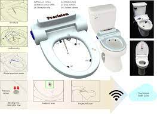

Week 1: Introduction
Going into this week, I had a couple of ideas.
First idea: I'm super interested in toilets. For instance, researchers at Stanford have invented a toilet that can detect health markers based on disease markers. Moreover, there are lots of places that don't have access to comprehensive sewer systems. Hence, some researchers are working on creating self-containing toilets aka toilets that do not rely on external energy or water and can dispose waste by itself. I don't know what I would do entirely with this project except I do think toilets are very cool.

Second idea: Lab equipment. Problem is, the thing I primarily work with are pipettes and I can't think of what else our lab would need. I don't think making an electronic pipette would be super satisfying though since electronic/robotic pipettes have already been made.

Talking to Nathan though, he mentioned that there are some researchers in MGH who might need help in creating something to model spinal cords. Hence, I would be interested in that.
Third idea: Having something that could create a model of proteins. I really like proteins and was imagining 3D printing amino acids and then having a machine that could link these amino acids into a linear peptide while modeling the release of water.
I think this would be more feasible since peptide bond formation is a standard reaction i.e. I don't have a bajillion types of reactions going on.
Here is a Video describing peptide bond formation
For now, I think I'm going to go with project idea number 2 (with the spinal cord MGH idea) since it's the most concrete and has a real-life impact. But if 2 doesn't work out, I'll most likely do 3.